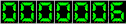

| Ir a anterior | Ir a principal |
Consejo Nacional de
Producción
Direcciones Regionales
DIRECCIÓN REGIONAL PACÍFICO CENTRAL |
|
| Ing. Oscar Brenes, Director Regional Ing. Jóse L. Castillo, Unidad Ejecución Operativa Ing. Daniel Ramírez, Unidad Servicios de Apoyo Barranca, Puntarenas, Costa Rica Tel: (506) 663-1435 / Fax: (506) 663-1694 e-mail: rpcent@cnp.go.cr |
|
| SUBREGIONES | |
| 1.BARRANCA Barranca |
Agr. Fred Chango, Jefe
E-mail: srbarran@cnp.go.cr Tel: (506) 663-0130 Fax: (506) 663-1694 |
| 2.JICARAL Jicaral |
Agr. Oldemar Azofeifa, Jefe E-mail: srjicaral@cnp.go.cr Tel/Fax: (506) 650-0089 |
| 3.OROTINA Orotina |
Ing. Jorge González, Jefe
E-mail: srorotina@cnp.go.cr Tel/Fax: (506) 428-8105 |
| 4.PARRITA Parrita |
Ing. Carlos Jiménez, Jefe
E-mail: srparrita@cnp.go.cr Tel/Fax: (506) 779-9010 |
| 5.QUEPOS Quepos |
Ing. Jorge Jirón, Jefe
E-mail: srquepos@cnp.go.cr Tel/Fax: (506) 777-0244 |
| PLANTA SEMILLAS Barranca |
Ing. Oscar Sarraulte, Jefe
E-mail:
ptsilos@cnp.go.cr Tel: (506) 663-0116 |
| PLANTA GRANOS Barranca |
Agr. Oscar Sarraulte, Jefe
E-mail:
ptsilos@cnp.go.cr Tel: (506) 663-0118 |
 |
Contador funcionando desde el 08 de octubre